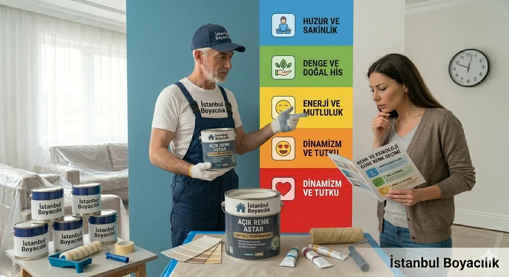

Duvar rengi, odanın görünümünü ve kişisel atmosfer algısını değiştirebilir. Valdez–Mehrabian (1994) araştırması renk kartlarına verilen duygusal tepkileri incelemiştir. Bu çalışma duvar boyasının hormon düzeyini, bebek ağlamasını veya sağlık sonuçlarını değiştirdiğini göstermez.
İstanbul Boyacılık olarak, renk seçimini mevcut ışık, mobilya ve tercihlerinize göre numunelerle birlikte planlıyoruz. Aşağıdaki renk önerileri dekorasyon seçenekleridir; tıbbi veya biyolojik sonuç vaat etmez.
Mavi Tonları: Serin Bir Renk Seçeneği
Işık ve alt ton kontrolü
Mavinin açık, koyu ve gri alt tonlu seçeneklerini odanın mevcut ışığıyla karşılaştırın. Aynı kartela tonu, farklı aydınlatma ve çevre renkleriyle farklı algılanabilir.
- Dekorasyon önerisi: Yatak veya çalışma odasında geniş uygulamadan önce küçük bir numune hazırlayın.
- Tercih: Toz mavisi veya daha doygun bir ton arasında karar verirken kendi konforunuzu değerlendirin; uyku veya odaklanma sonucu beklemeyin.
Kırmızı Tonları: Vurgu ve Kontrast
Doygunluk ve alan büyüklüğü
Kırmızı, nötr mobilyalarla belirgin bir görsel vurgu oluşturabilir. Odanın tamamına uygulamadan önce doygunluğu ve gün içindeki görünümünü numuneyle kontrol edin.
- Dekorasyon önerisi: Yemek veya oturma odasında tek duvar seçeneği denenebilir.
- Tercih: Geniş alan kullanımını kendi zevkinize göre belirleyin; metabolizma, iştah veya kan basıncı sonucu vaat edilmez.
Yeşil: Doğal Tonlarla Uyum
Mobilya ve ışık uyumu
Zeytin, adaçayı ve açık yeşil; ahşap, bej veya griyle farklı kombinasyonlar sunar. Bir tonu yalnız ekrandaki görüntüsüne göre seçmek yerine odanın içinde deneyin.
- Dekorasyon önerisi: Oturma odası, ofis veya kütüphanede mobilyalarla birlikte numune inceleyin.
- Tercih: Yeşil boya göz yorgunluğunu tedavi etmez; ekran çevresindeki aydınlatma ve kullanıcı tercihleri ayrıca değerlendirilmelidir.
Renk Numunesini Farklı Işıklarda İnceleyin
Karteladaki rengi, boyanacak duvarda gündüz ve akşam ışığında değerlendirin. Lambanın türü, parlaklığı, doğal ışık ve çevredeki renkler görünümü değiştirebilir; yalnız mağaza ışığında karar vermeyin.
Üretici veriyorsa LRV (Işık Yansıtma Değeri) renk karşılaştırmasına yardımcı olabilir. Tek bir yüzde sınırından odanın nasıl algılanacağı çıkarılamaz. Numuneyi farklı duvarlarda, tavan ve döşemeyle birlikte inceleyin.
Sarı: Sıcak Bir Vurgu Seçeneği
Açıklık ve doygunluk kontrolü
Pastel sarı ile doygun sarı odada farklı görsel etkiler oluşturabilir. Bebek odası dahil her mekânda geniş uygulamadan önce numune deneyin; sarı boya için hormon veya bebek ağlaması sonucu ileri sürülmez.
İpucu: Sarıyı ana duvar rengi yapmak yerine; hardal veya pastel toprak sarısı tonlarını antrelerde veya loş koridorlarda kullanarak, mekana "sıcak bir karşılama" hissi katabilirsiniz.
Dekoratif Renk Örnekleri
Aşağıdaki HEX kodları ekranda fikir vermek içindir; üreticinin boya kodu veya birebir renk eşleşmesi değildir. Gerçek kartela ve duvar numunesiyle seçim yapın.
Adaçayı Mavisi
Gri alt tonlu mavi için görsel örnek; gerçek boya numunesiyle karşılaştırın.
Zeytin Yeşili
Ahşap ve nötr mobilyalarla birlikte denenebilecek bir yeşil.
Kiremit Kırmızı
Nötr yüzeyler yanında belirgin bir vurgu oluşturabilir.
Mat Hardal
Antre ve koridor için sıcak bir renk seçeneği.
Grej (Gri-Bej)
Farklı mobilyalarla karşılaştırılabilecek nötr bir zemin.
Sonuç
Renk seçiminin en kullanışlı adımı, tercih ettiğiniz tonları gerçek duvarda ve mevcut ışıkta görmektir. Boya rengi uyku sorunları, kronik yorgunluk veya odaklanma güçlüğü için tedavi olarak sunulamaz; bu konular sağlık uzmanıyla değerlendirilmelidir.
Evinizin Renklerini Birlikte Seçelim!
Keşifte odanın ışığını, mevcut yüzeyleri ve tercihlerinizi değerlendirip kartela ve numune üzerinden renk planı hazırlayabiliriz.